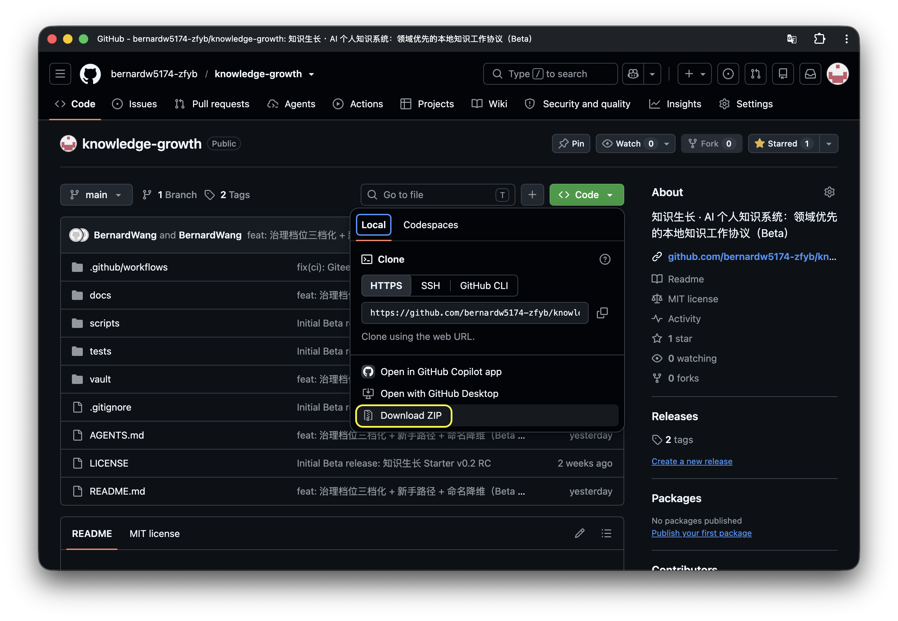
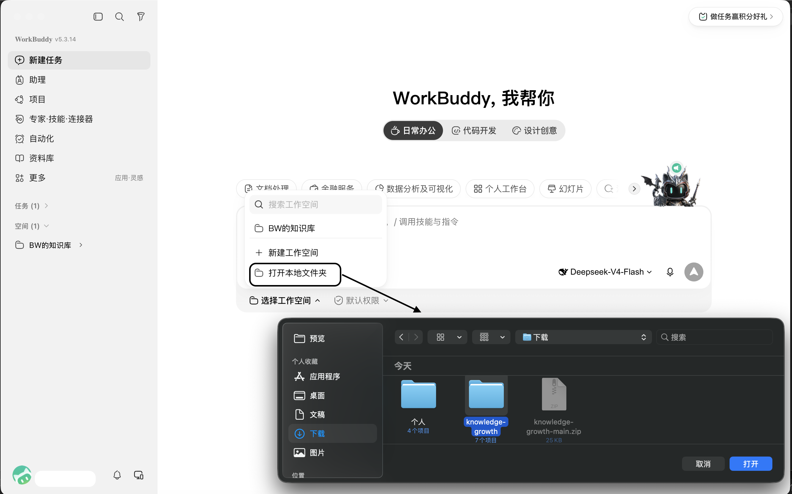
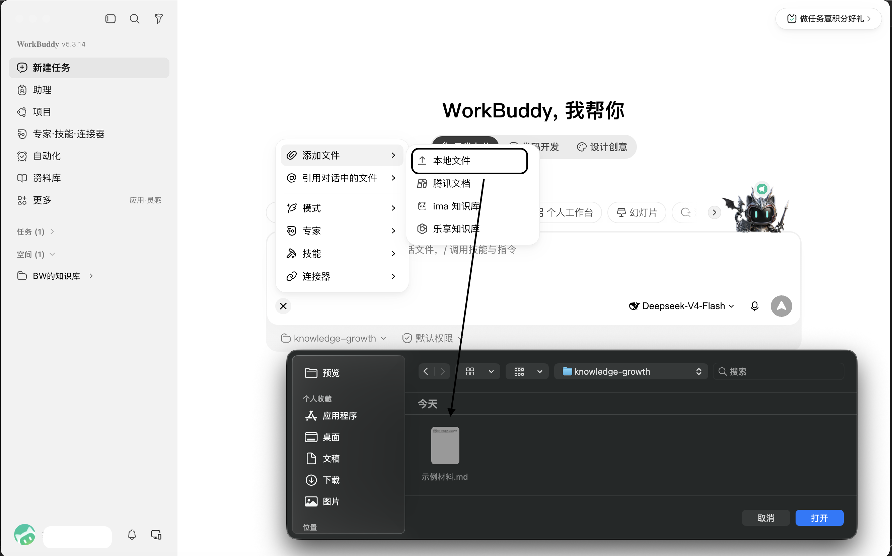
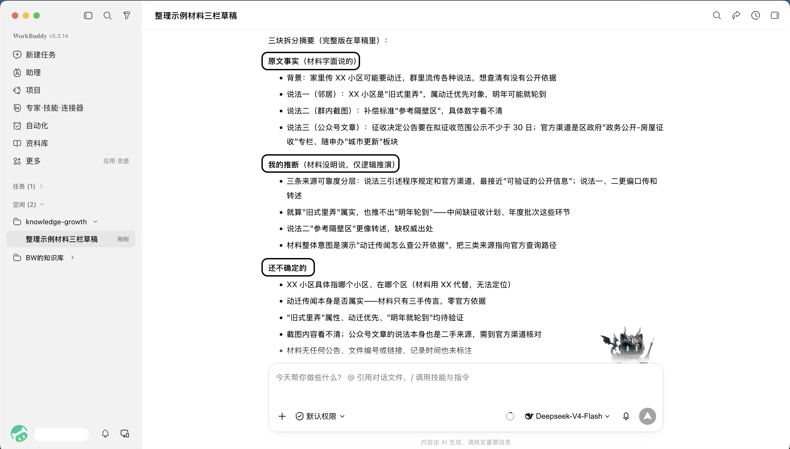

第一次用，从这里开始。一屏一个动作，每一步做完再走下一步。
本教程与 GitHub 仓库 README 同源；改动以 GitHub 为准，PDF 为派生。
一屏一个动作，每一步做完再走下一步。
从官网安装：https://www.workbuddy.cn/ （请从官方入口下载，不要用第三方下载站）。
任选一个能打开的地址，下载 ZIP 并解压：
GitHub 入口参考（界面可能略有差异，认「Download ZIP」按钮即可）：

在页面找到下载入口（GitHub 点 Code → Download ZIP，Gitee 点「克隆/下载」），下载后解压，得到一个名为 knowledge-growth 的文件夹。不需要懂 Git、仓库或命令行。
打开 WorkBuddy，新建一个对话，把刚解压出的 knowledge-growth 文件夹设为工作区。

用你自己的材料：把第 1 步准备的那份文件，拖进对话框；想偷懒，直接把文件夹里的「示例材料.md」拖进去也行。
拖完后，发下面这句话（整段复制，不用改）：
请按这个工作区里的规则，处理我刚上传的这份文件：把内容分成「事实」「你的推断」「还不确定的」三块，先给我一版草稿，不要替我下结论。
AI 可能回问你「归到哪个领域」——填「演示」就行。领域只是给材料贴个标签，这次先跑通，标签以后能改。

成功标志是两点，而不是一段漂亮的话：

看到这两点，第一次就跑通了。至于目录长什么样、有哪些规则，第一天不用理解。
拿到草稿后，你不用读懂全文，只看三点：
你说「确认」之后，它才会成为正式记录；不确认，就停在草稿，随时能改。